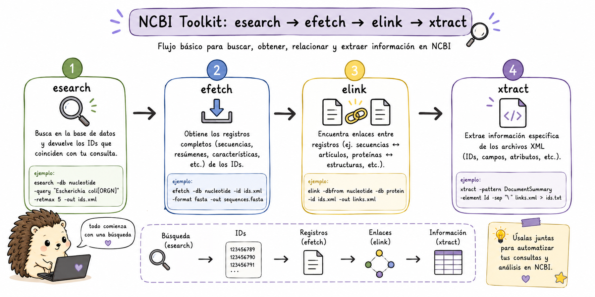
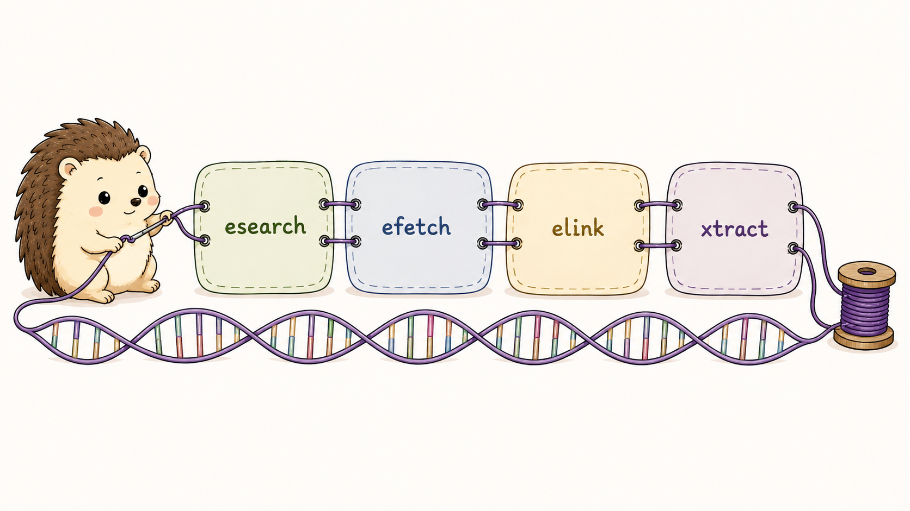

9 E-utilities (NCBI)
Las E-utilities son un conjunto de herramientas que permiten buscar, recuperar y conectar información entre diferentes bases de datos del NCBI (PubMed, GenBank, SRA, Protein, etc.) directamente desde la línea de comandos o scripts.
En lugar de abrir una página web y copiar resultados manualmente, podemos realizar consultas desde la terminal y utilizar su salida directamente en otros comandos.
La lógica que seguiremos en esta sección es:
explorar → buscar → recuperar → conectar → extraer
einfo esearch efetch elink xtractCada herramienta cumple una función diferente, pero podemos combinarlas para construir pipelines reproducibles.
La idea fundamental es pensar en las E-utilities como piezas de un sistema de consulta:
einfo → ¿qué bases y campos existen?
esearch → ¿qué registros cumplen mi búsqueda?
efetch → ¿qué información quiero recuperar?
elink → ¿qué registros relacionados existen?
xtract → ¿qué campos quiero extraer de XML?
Esta separación permite construir pipelines reproducibles y evita descargar información que no necesitamos.
Aunque las E-utilities son de acceso libre, se recomienda registrarse en NCBI y usar tu API key para evitar límites de velocidad. Con API key: 10 solicitudes/segundo; sin ella: 3 solicitudes/segundo.
export NCBI_API_KEY="tu_api_key_aqui"9.1 einfo - Explorar bases de datos
Antes de hacer una búsqueda compleja, es útil saber cómo está organizada la base de datos. einfo proporciona información sobre las bases disponibles, los campos que pueden utilizarse en las consultas y los enlaces entre bases.
Esto es especialmente importante porque las búsquedas de NCBI no son simplemente búsquedas de texto libre. Los campos como [Organism], [Gene Name], [PDAT] o [Title/Abstract] permiten restringir la consulta y obtener resultados mucho más precisos.
Ejemplos:
# Listar todas las bases de datos disponibles en NCBI
esearch -db all -query "" | einfo
# Información detallada de una base de datos específica
einfo -db nucleotide
# Ver campos de búsqueda disponibles
einfo -db pubmed -fields
# Ver los links disponibles entre bases de datos
einfo -db sra -linksEstos comandos responden preguntas diferentes sobre la base de datos:
- ¿Qué bases existen?
- ¿Qué campos puedo utilizar en una búsqueda?
- ¿Qué información y relaciones ofrece una base concreta?
Conocer esta estructura antes de construir una consulta ayuda a evitar búsquedas demasiado generales.
9.2 esearch y efetch - Buscar y Descargar
9.2.1 🔎 Separar la búsqueda de la recuperación
Una idea fundamental de E-utilities es que buscar un registro y recuperar su contenido son operaciones diferentes.
esearch responde esencialmente a: “¿qué registros cumplen esta consulta?”.
efetch responde: “dame el contenido de esos registros en el formato que necesito”.
Por eso es tan común encontrar pipelines como:
esearch ... | efetch ...Podemos pensarlo así:
esearch
↓
IDs
↓
efetch
↓
datosEsta separación permite, por ejemplo, buscar todos los transcritos que cumplen una condición y después decidir si queremos sus secuencias FASTA, registros GenBank o metadatos.
9.2.2 Búsquedas básicas
Podemos utilizar esearch para buscar registros en diferentes bases de datos. La consulta se escribe con -query y puede incluir términos y campos específicos.
# Buscar en PubMed
esearch -db pubmed -query "BRCA1 AND breast cancer[MeSH] AND 2023[PDAT]"
# Contar resultados sin descargar
esearch -db nucleotide -query "Homo sapiens[Organism] AND 16S rRNA" | \
xtract -pattern ENTREZ_DIRECT -element Count
# Buscar genes en NCBI Gene
esearch -db gene -query "TP53[Gene Name] AND Homo sapiens[Organism]"
# Buscar en SRA
esearch -db sra -query "Mus musculus[Organism] AND RNA-seq AND 2023[PDAT]"Observa que la misma herramienta puede utilizarse con diferentes bases de datos. Lo que cambia es -db y la consulta que enviamos.
Los campos entre corchetes permiten hacer búsquedas más específicas. Por ejemplo:
[Organism]→ organismo[Gene Name]→ nombre del gen[PDAT]→ fecha de publicación[Title/Abstract]→ título o resumen
9.2.3 Descarga con efetch
Una vez que tenemos un identificador o la salida de una búsqueda, podemos utilizar efetch para recuperar el contenido que necesitamos.
El formato de salida depende de la base de datos y del tipo de información que queremos obtener.
# Descargar secuencia en formato FASTA
efetch -db nucleotide -id NM_007294 -format fasta > BRCA1.fa
# Descargar en formato GenBank
efetch -db nucleotide -id NM_007294 -format gb > BRCA1.gb
# Descargar múltiples secuencias
efetch -db nucleotide -id NM_007294,NM_000546,NM_000059 -format fasta > genes.fa
# Pipeline: buscar + descargar
esearch -db nucleotide -query "BRCA1[Gene] AND Homo sapiens[Organism] AND mRNA[Filter]" | \
efetch -format fasta > BRCA1_transcripts.fa
# Descargar secuencia de proteína
efetch -db protein -id NP_009225 -format fasta > BRCA1_protein.fa
# Descargar abstract de un artículo de PubMed
efetch -db pubmed -id 37465840 -format abstractEn los primeros ejemplos ya conocemos los identificadores y se los pasamos directamente a efetch.
En el pipeline, en cambio, esearch encuentra los registros y pasa sus identificadores a efetch. Esta combinación es una de las formas más útiles de trabajar con las E-utilities.
9.3 Obtener metadatos de SRA
Las E-utilities también permiten consultar información asociada con experimentos y runs del SRA.
Esto resulta especialmente útil cuando necesitamos construir una lista de accessions o recuperar metadatos antes de descargar los datos.
# Información de un BioProject
esearch -db sra -query "PRJNA123456" | \
efetch -format runinfo > runinfo.csv
# Obtener todos los runs de un experimento
esearch -db sra -query "SRX1234567" | \
efetch -format runinfo | \
cut -d',' -f1 | grep "^SRR" > runs.txt
# Metadatos completos en XML
esearch -db biosample -query "SAMN12345678" | \
efetch -format xml | \
xtract -pattern BioSample -element Accession,Title,OrganismEn estos ejemplos utilizamos las E-utilities para obtener información que después puede utilizarse en otros pasos del análisis.
Por ejemplo, runinfo puede convertirse en una tabla de runs que posteriormente utilizaremos para descargar datos con SRA Toolkit.
9.5 xtract - Parsear XML
Muchas respuestas detalladas del NCBI se entregan en formato XML. XML permite representar información organizada en estructuras jerárquicas, pero no resulta especialmente cómodo para leer o analizar directamente desde la terminal.
xtract permite seleccionar patrones y elementos específicos dentro de ese XML y convertirlos en una salida tabular. Es especialmente útil cuando queremos pasar de una respuesta de NCBI a un archivo TSV que posteriormente pueda analizarse con awk, cut, R o Python.
La idea general es:
NCBI → XML → xtract → TSV/CSV → awk/cut/sort/...Ejemplos:
# Extraer información de múltiples genes
esearch -db gene -query "cancer AND Homo sapiens[Organism]" | \
efetch -format xml | \
xtract -pattern Entrezgene -element Gene-ref_locus Gene-ref_desc \
-block Gene-commentary -match Gene-commentary_type@value,reference-genome \
-element Gene-commentary_accession
# Extraer datos de publicaciones
esearch -db pubmed -query "RNA-seq AND methods[Title]" | \
efetch -format xml | \
xtract -pattern PubmedArticle \
-element MedlineCitation/PMID ArticleTitle \
-block Author -first LastName,ForeName \
> publicaciones.tsvAquí xtract actúa como un puente entre una respuesta XML y una tabla que podemos seguir procesando.
No necesitamos aprender toda la estructura de XML para empezar. Lo importante es identificar el patrón que queremos (-pattern) y los elementos que queremos recuperar (-element).

¿Cuál pipeline descarga correctamente las secuencias de ARNm de BRCA2 humano en formato FASTA?
efetch -db nucleotide -query "BRCA2 AND mRNA" -format fastaesearch -db gene -query "BRCA2[Gene]" | efetch -format fastaesearch -db nucleotide -query "BRCA2[Gene Name] AND Homo sapiens[Organism] AND mRNA[Filter]" | \
efetch -format fasta > BRCA2_mRNA.faeinfo -db nucleotide -query "BRCA2" | efetch -format fastaLa respuesta correcta es c).
- a)
efetchno tiene flag--query; requiere IDs específicos o input desdeesearch - b) Busca en la base de datos
gene, no ennucleotide, y sin filtro de mRNA puede traer otros tipos de secuencias - c) ✅ Pipeline correcto:
esearchbusca con filtros apropiados →efetchdescarga en FASTA - d)
einfosirve para explorar la estructura de la base de datos, no para buscar secuencias
Completa el pipeline para descargar los metadatos de runs del SRA asociados al BioProject PRJNA548382 y extraer: Run ID, número de bases, y nombre del organismo:
esearch -db ___ -query "PRJNA548382[BioProject]" | \
efetch -format ___ | \
cut -d',' -f___, ___, ___ | \
___ -n '2,$p' > metadatos_runs.csvesearch -db sra -query "PRJNA548382[BioProject]" | \
efetch -format runinfo | \
cut -d',' -f1,5,30 | \
sed -n '2,$p' > metadatos_runs.csv
# Versión más robusta con xtract para extraer campos específicos:
esearch -db sra -query "PRJNA548382[BioProject]" | \
efetch -format xml | \
xtract -pattern EXPERIMENT_PACKAGE \
-element RUN@accession,Run@total_bases,SCIENTIFIC_NAME \
> metadatos_runs.tsvLas posiciones de las columnas de runinfo pueden variar dependiendo de la información disponible en el proyecto. Para un pipeline reutilizable, es preferible identificar los nombres de las columnas antes de asumir posiciones fijas.
Construye un pipeline que:
- Busque en PubMed artículos sobre “single-cell RNA-seq” publicados en 2022-2023
- Cuente el número de artículos encontrados
- Extraiga los PMIDs y los títulos
- Guarde el resultado en
scRNAseq_papers.tsv
# 1. Búsqueda y conteo
esearch -db pubmed \
-query "single-cell RNA sequencing[Title/Abstract] AND 2022:2023[PDAT]" \
> search_results.xml
count=$(cat search_results.xml | xtract -pattern ENTREZ_DIRECT -element Count)
echo "Artículos encontrados: $count"
# 2. Descargar y parsear metadata
esearch -db pubmed \
-query "single-cell RNA sequencing[Title/Abstract] AND 2022:2023[PDAT]" | \
efetch -format xml | \
xtract -pattern PubmedArticle \
-element MedlineCitation/PMID \
-element ArticleTitle \
-element Journal/Title \
-element PubDate/Year \
| sed 's/\t/\t/g' > scRNAseq_papers.tsv
# Agregar encabezado
sed -i '1i PMID\tTitulo\tRevista\tAnio' scRNAseq_papers.tsv
echo "Primeros 5 resultados:"
head -6 scRNAseq_papers.tsvUsando E-utilities, realiza un análisis del número de publicaciones por año (2018-2023) sobre los términos “metagenomics”, “transcriptomics” y “proteomics” y genera una tabla comparativa:
| Año | Metagenomics | Transcriptomics | Proteomics |
|---|---|---|---|
| 2018 | … | … | … |
# Script de análisis bibliométrico
echo -e "Año\tMetagenomics\tTranscriptomics\tProteomics" > bibliometria.tsv
for year in 2018 2019 2020 2021 2022 2023; do
meta=$(esearch -db pubmed \
-query "metagenomics[Title/Abstract] AND ${year}[PDAT]" | \
xtract -pattern ENTREZ_DIRECT -element Count)
trans=$(esearch -db pubmed \
-query "transcriptomics[Title/Abstract] AND ${year}[PDAT]" | \
xtract -pattern ENTREZ_DIRECT -element Count)
prot=$(esearch -db pubmed \
-query "proteomics[Title/Abstract] AND ${year}[PDAT]" | \
xtract -pattern ENTREZ_DIRECT -element Count)
echo -e "$year\t$meta\t$trans\t$prot" >> bibliometria.tsv
sleep 1 # Respetar límites de la API
done
echo "=== Tabla Bibliométrica ==="
cat bibliometria.tsv | column -t -s $'\t'